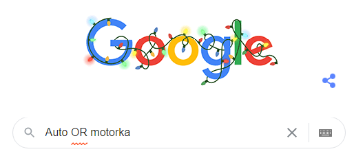
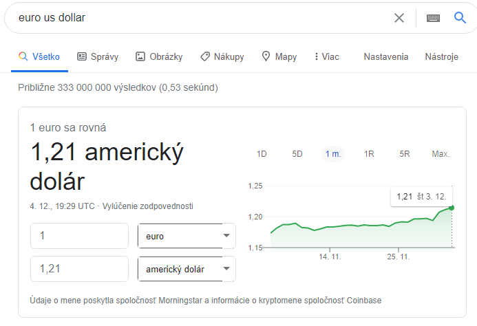
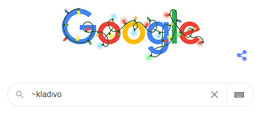
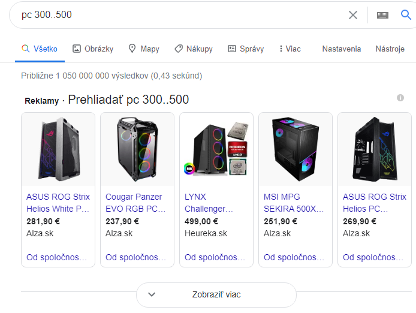
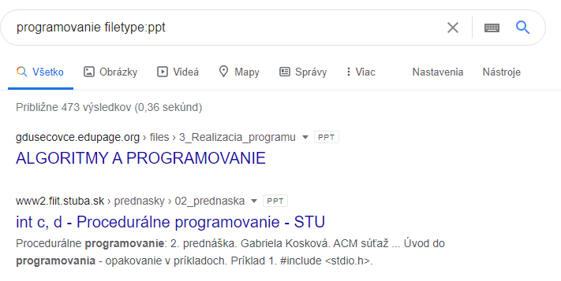
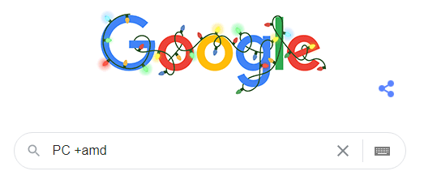
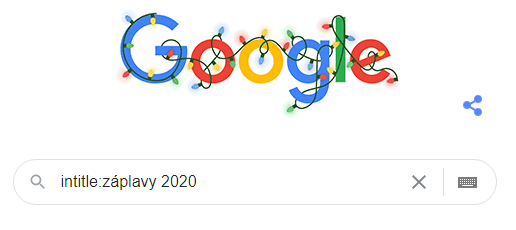
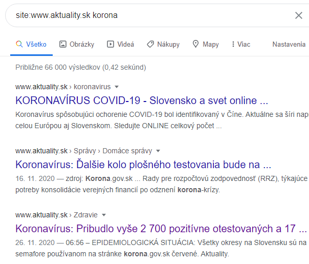
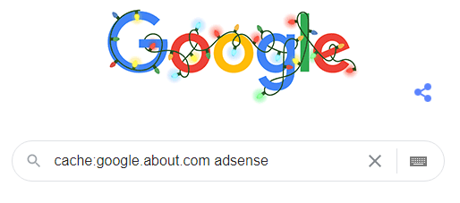
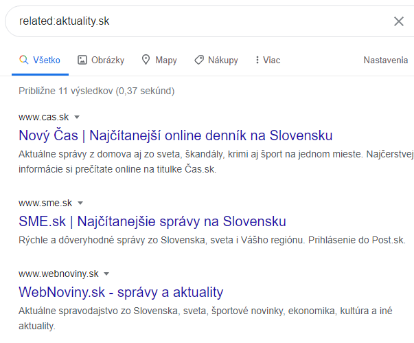

Pri hľadaní presnej fráze ju môžeme dať do uvodzoviek. Tento trik vieme používať aj s inými trikmi napr. or/and
Príklad: "deň červenej armády" OR "deň obrancu vlasti"

Existujú dve boolean-ovské vyhľadávacie príkazy: AND a OR. Keď zadáme AND tak veci ktoré nám to vyhľadá budú obsahovať obidve slová
Príklad: Auto AND motorka - Vyhľadá to nadpisy ktoré obsahujú slovo auto a motorka
Keď napíšeme do vyhľadávania OR tak to vyhľadá jedno alebo druhé kľúčové slovo !POZOR! Je dôležité zadať správny zápis lebo inak to google odignoruje
Príklad: Auto OR motorka -vyhľadá to nadpisy ktoré obsahujú jedno alebo druhé slovo.
OR je možné nahradiť aj: | čiže napríklad: Auto | motorka
Keď chceme zistiť aktuálny kurz stačí napísať ktorú menu chceme previesť na ktorú.Keď to vyhľadáme tak v hornej časti obrazovky sa zobrazí skrytá kalkulačka kde
Príklad: euro to us dollar
Tento príkaz vie vyhľadať definícu slov z rôznych zdrojov. Zobrazí sa definícia a zdroje t.j. slovníky alebo stránky.
Príklad: definition: auto

Synonymum je slovo rovnakého významu
Príklad:~kladivo (vlnka sa píše ALT+1)
Keď chceme nájsť nejakú vec v čiselnom rozmedzí stačí napísať vec ktorú hľadáme napísať prvý číselný údaj dve bodky a druhý číselný údaj
Príklad: PC 300..500
Ak chceme nájsť konkrétny súbor musíme napísať filetype: prípona - Prípony sú napr exe,ppt,docx...
Príklad: programovanie filetype:ppt
Keď chceme nájsť konkrétne slovo alebo naopak nechceme aby nám to našlo dané slovo vieme použiť znamienka + a -
Príklad: PC+amd alebo PC-intel
Vtedy keď sa snažíme nájsť konkrétnu vec v nadpise tak sa zíde tento "príkaz" = intitle:
Príklad: intitle:záplavy 2020
Keď chceme nájsť konkrétnu vec na konkrétnej stránke použijeme site:
Príklad: site:www.aktuality.sk korona
Ak sa web stránka nedávno zmenila, alebo práve neodpovedá, môžete vyhľadávať v uloženej cache pamäti Google pomocou "príkazu" cache:
Príklad: cache:google.about.com adsense
Ak chceme nájsť podobnú stránku stačí napísať related: do googlu
Príklad: related:aktuality.sk
